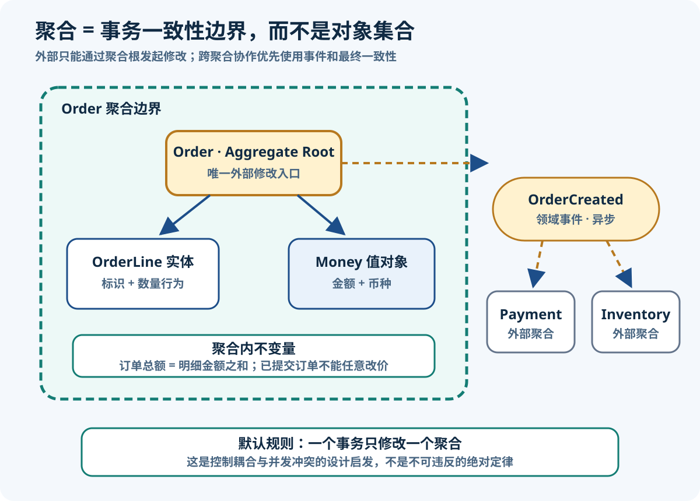
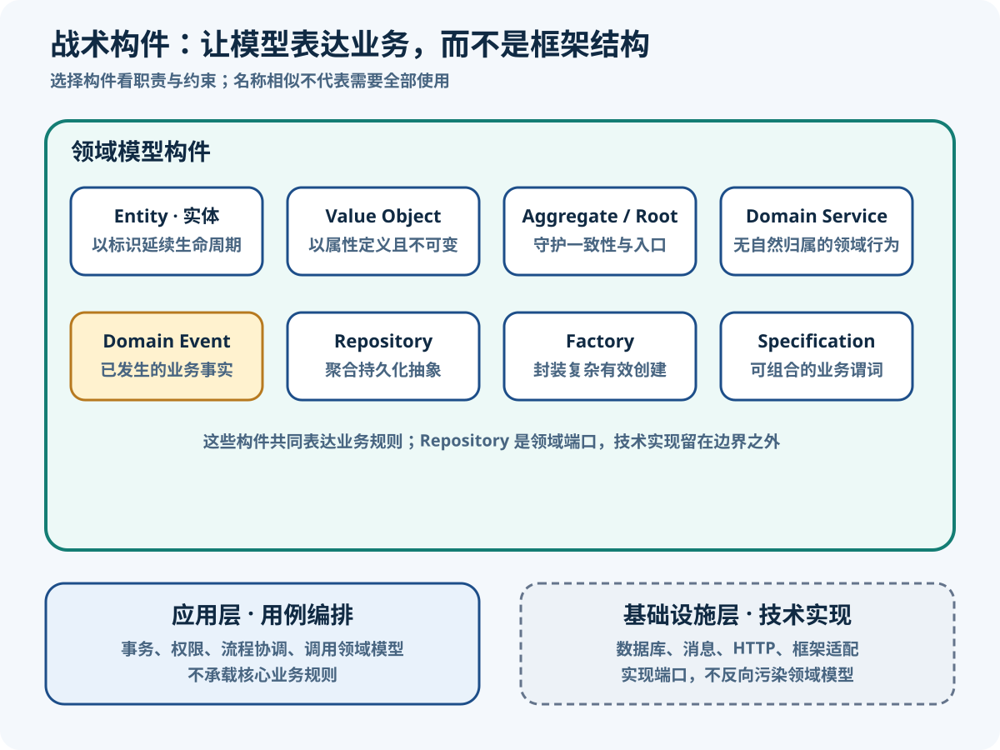

DDD 战术设计与领域模型
整理日期：2026-08-11；资料检索日期：2026-08-11
目标：在 Order 限界上下文内部，用普通 Java 21 类型表达身份、值、业务行为与一致性。
核心结论
- 战术模式在一个限界上下文内部表达模型；若模型边界仍混乱，堆叠实体、仓储和服务只会把混乱写得更复杂。
- 实体以身份和生命周期延续，值对象以属性值表达含义；二者都可以包含业务行为，而不只是数据容器。
- 聚合保护需要同步成立的不变量与事务一致性，不是“能从一个对象导航到的所有对象”，也不是数据库外键图。
- 领域行为如果表达业务政策，应优先放在自然拥有该责任的实体或值对象；只有确实没有自然归属时才使用领域服务。
- 领域事件是上下文内部模型中的已发生事实；集成事件是边界外的通信契约。它们可能源于同一事实，但不应被当成同一个对象。
来源定义：Eric Evans 的 DDD Reference PDF把实体、值对象、服务、聚合、仓储、工厂和领域事件作为模型构件，并要求聚合根守护整体不变量。Java 工程翻译：本篇以框架无关的 Java 类型演示职责；没有 Spring、JPA 或 Web 注解，不表示基础设施不需要，而是先让业务规则可独立理解和测试。
实体与值对象
最直接的判断题是：“属性都变了，它还是不是同一个业务对象？”订单改了收货地址仍是同一张订单，因为 OrderId 延续了身份；两个金额同为 CNY 99.00 则可以互换，因为 Money 的含义完全由数值和币种决定。
| 判断维度 | Entity（实体） | Value Object（值对象） | 订单例子 |
|---|---|---|---|
| 相等依据 | 稳定身份；属性变化后仍可视为同一个 | 全部构成属性的值；值相同即可互换 | Order/OrderLine 对比 Money/Address |
| 生命周期 | 需要跟踪创建、状态转换与终止 | 没有独立身份，通常随拥有者被替换 | 订单从 Draft 到 Submitted；地址修改产生新地址值 |
| 可变性 | 可以在受约束行为中改变状态 | 应不可变，操作返回新值 | order.submit(now)；money.add(other) |
| 设计焦点 | 身份、连续性和行为 | 有效构造、值相等、无副作用行为 | 订单号不可随意替换；Money 禁止缺币种或负金额 |
来源定义：Fowler 的 Value Object 说明强调值对象按属性值判断相等，并指出对象属于实体还是值取决于上下文；Address 在订单中可作为不可变快照，在需要独立审计每个地址记录的上下文中也可能成为实体。
Money 值对象（Java 21）
import java.math.BigDecimal;
import java.util.Currency;
import java.util.Objects;
record Money(BigDecimal amount, Currency currency) {
Money {
Objects.requireNonNull(amount, "amount");
Objects.requireNonNull(currency, "currency");
if (amount.signum() < 0) {
throw new IllegalArgumentException("金额不能为负数");
}
amount = amount.stripTrailingZeros();
}
Money add(Money other) {
if (!currency.equals(other.currency())) {
throw new IllegalArgumentException("币种必须一致");
}
return new Money(amount.add(other.amount()), currency);
}
Money multiply(int factor) {
if (factor <= 0) {
throw new IllegalArgumentException("数量必须大于 0");
}
return new Money(amount.multiply(BigDecimal.valueOf(factor)), currency);
}
}工程解释：Java record自动提供 final 组件、按组件的 equals/hashCode 和访问器，适合许多值对象；但 record 只是语言机制，不自动保证领域有效性。仍需在规范构造器中校验，保护可变组件的防御性副本，并明确金额精度、舍入和币种规则。若对象需要延续身份、延迟加载或复杂封装，record 可能并不合适。
聚合与不变量
Aggregate（聚合）把必须共同保持业务一致的实体和值对象圈进一个边界；其中一个实体是 Aggregate Root（聚合根），外部只能持有根的引用并通过根发起修改。Invariant（不变量）是在一次业务操作完成后必须为真的规则，例如“已提交订单至少包含一个订单行”“只有草稿订单能增加订单行”。

图可用文字等价表达为：Order 是唯一外部修改入口，内部管理 OrderLine 和 Money，同步守住状态转换等不变量；Payment 与 Inventory 在聚合边界外，不通过可变对象引用加入订单事务。聚合成功进入 Submitted 后只记录内部 OrderSubmitted；应用与集成适配器在事务边界把它映射为不同的、版本化的 OrderSubmittedV1并写入 Outbox，relay 再投递给幂等消费者。图中的虚线绝不表示领域事件对象或 Aggregate 直接调用外部网络。
Vaughn Vernon 的 Effective Aggregate Design把重点从对象图导航转向真实一致性约束，并建议设计小聚合、通过标识引用其他聚合、跨聚合使用最终一致性。实践默认：“一个事务只修改一个聚合实例”是控制锁竞争、耦合和失败范围的强启发式，不是不可违反的 DDD 法律。若业务确有必须原子成立的跨对象不变量，应先复核聚合边界；若仍决定一次修改多个聚合，要记录并发、恢复与扩展代价，而不是把技术事务能力当作证明。
Order 聚合聚焦示例（Java 21）
下列代码可保存为 Order.java 编译。它是战术模式的聚焦示例，不包含持久化、消息发布和完整错误层次；所有引用的领域类型均定义在片段内，后续 Java 实践篇会扩展应用与基础设施实现。
import java.math.BigDecimal;
import java.time.Instant;
import java.util.ArrayList;
import java.util.Currency;
import java.util.List;
import java.util.Objects;
import java.util.Optional;
import java.util.UUID;
record OrderId(UUID value) {
OrderId {
Objects.requireNonNull(value, "value");
}
}
record Money(BigDecimal amount, Currency currency) {
Money {
Objects.requireNonNull(amount, "amount");
Objects.requireNonNull(currency, "currency");
if (amount.signum() < 0) {
throw new IllegalArgumentException("金额不能为负数");
}
amount = amount.stripTrailingZeros();
}
Money multiply(int factor) {
if (factor <= 0) {
throw new IllegalArgumentException("数量必须大于 0");
}
return new Money(amount.multiply(BigDecimal.valueOf(factor)), currency);
}
}
enum OrderStatus { DRAFT, SUBMITTED }
record OrderSubmitted(OrderId orderId, Instant occurredAt) {
OrderSubmitted {
Objects.requireNonNull(orderId, "orderId");
Objects.requireNonNull(occurredAt, "occurredAt");
}
}
final class OrderLine {
private final UUID id;
private final String productId;
private final Money unitPrice;
private int quantity;
OrderLine(UUID id, String productId, int quantity, Money unitPrice) {
this.id = Objects.requireNonNull(id);
if (productId == null || productId.isBlank()) {
throw new IllegalArgumentException("商品标识不能为空");
}
this.productId = productId;
this.unitPrice = Objects.requireNonNull(unitPrice);
changeQuantity(quantity);
}
UUID id() { return id; }
String productId() { return productId; }
int quantity() { return quantity; }
Money unitPrice() { return unitPrice; }
Money subtotal() { return unitPrice.multiply(quantity); }
void changeQuantity(int newQuantity) {
if (newQuantity <= 0) {
throw new IllegalArgumentException("订单行数量必须大于 0");
}
this.quantity = newQuantity;
}
}
public final class Order {
private final OrderId id;
private final List<OrderLine> lines = new ArrayList<>();
private final List<OrderSubmitted> domainEvents = new ArrayList<>();
private OrderStatus status = OrderStatus.DRAFT;
// 对外只暴露不可变快照，不泄漏可变的聚合内部实体。
public record OrderLineSnapshot(
UUID id,
String productId,
int quantity,
Money unitPrice,
Money subtotal) {}
private Order(OrderId id) {
this.id = Objects.requireNonNull(id);
}
public static Order create(OrderId id) {
return new Order(id);
}
public void addLine(String productId, int quantity, Money unitPrice) {
requireDraft();
lines.add(new OrderLine(UUID.randomUUID(), productId, quantity, unitPrice));
}
public void changeLineQuantity(UUID lineId, int quantity) {
requireDraft();
line(lineId).changeQuantity(quantity);
}
public void submit(Instant occurredAt) {
requireDraft();
Objects.requireNonNull(occurredAt);
if (lines.isEmpty()) {
throw new IllegalStateException("空订单不能提交");
}
status = OrderStatus.SUBMITTED;
domainEvents.add(new OrderSubmitted(id, occurredAt));
}
public OrderId id() { return id; }
public OrderStatus status() { return status; }
public List<OrderLineSnapshot> lineSnapshots() {
return lines.stream()
.map(line -> new OrderLineSnapshot(
line.id(),
line.productId(),
line.quantity(),
line.unitPrice(),
line.subtotal()))
.toList();
}
public List<OrderSubmitted> pullEvents() {
var collected = List.copyOf(domainEvents);
domainEvents.clear();
return collected;
}
private OrderLine line(UUID lineId) {
return lines.stream()
.filter(candidate -> candidate.id().equals(lineId))
.findFirst()
.orElseThrow(() -> new IllegalArgumentException("订单行不存在"));
}
private void requireDraft() {
if (status != OrderStatus.DRAFT) {
throw new IllegalStateException("只有草稿订单可以修改或提交");
}
}
}
interface OrderRepository {
Optional<Order> findById(OrderId id);
void save(Order order);
}
interface PricingPolicy {
Money priceFor(String productId, int quantity);
}不变量审查：构造器不可从外部直接调用；create只建立 Draft，不产生外发触发；订单行只能经聚合根加入或改量；submit(Instant)同时拒绝非 Draft 和空订单，状态变为 Submitted 后才记录不可变的 OrderSubmitted；没有 public setter。lineSnapshots()返回新建的不可变 record 列表，调用者拿不到内部 OrderLine。Payment 与 Inventory 没有成为 Order 的直接对象引用，聚合也不发布网络消息。
聚焦范围：本篇样例未计算订单总额，也未实现跨行同币种校验；图中的总额不变量、事件数据快照与集成映射是概念/练习扩展，已在第 6 篇完整 Java 实践中实现并以可运行测试验证。
领域服务与事件
“服务”一词容易把所有行为都吸走。判断顺序应是：先问行为是否自然属于实体或值对象；若它表达领域政策，却涉及多个对象或没有自然拥有者，再命名为领域服务；用例调度、事务和外部 I/O 则属于应用服务。
| 构件 | 职责与所有权 | 是否承载业务决策 | 订单例子 | 边界提醒 |
|---|---|---|---|---|
| Entity 行为 | 对象自己拥有的身份、状态转换和规则 | 是 | Order.submit() 决定能否提交 | 不要把自然行为移到 OrderService |
| Domain Service | 领域中的无自然对象归属操作，使用统一语言命名 | 是 | PricingPolicy.priceFor(...)，仅当价格政策不自然属于某个实体/值对象 | 不是通用 helper 或“放不下的代码”桶 |
| Application Service | 接收用例、协调仓储/领域对象/端口、控制事务 | 否；只编排 | 创建订单、取得价格、提交、保存、收集事件 | 认证、重试和消息发送不应进入聚合 |
| Domain Event | 当前上下文模型中领域专家关心的已发生事实 | 记录业务意义 | 不可变的 OrderSubmitted | 不等于数据库行变更或 Kafka 消息 |
| Integration Event | 面向其他上下文的版本化通信契约 | 不重新作领域决策 | ordering.order-submitted.v1 消息 | 由适配器映射并可靠发布，需兼容、幂等与投递策略 |
来源定义：Evans 将领域服务描述为模型中重要、无自然实体/值对象归属的操作，将领域事件描述为领域专家关心的已发生事实；事件通常不可变并记录发生时间。Microsoft Learn 的战术 DDD 指南明确区分领域服务与应用服务，也区分上下文内领域事件和事务提交后跨边界发布的集成事件。
仓储、工厂与规约
| 模式 | 核心语义 | 何时使用 | 订单选择 | 常见误用 |
|---|---|---|---|---|
| Repository（仓储） | 以聚合根集合般的接口提供查找、加入/保存，隐藏存储与映射技术 | 聚合根需要全局访问或按领域条件查找 | OrderRepository.findById/save | 为每个实体建仓储；暴露 ORM Session 或全套表级 CRUD |
| Factory（工厂） | 封装复杂创建，产出内部一致、身份明确的完整对象或聚合 | 构造跨多个步骤、类型选择或规则，构造器已无法清晰表达 | 简单情况先用 Order.create；复杂导入再引入独立工厂 | 只为隐藏 new 建无意义工厂，或让工厂产生半成品 |
| Specification（规约） | 把一个业务候选是否满足条件表达为可命名、可组合的谓词 | 同一规则用于校验、选择或组合，且是稳定领域概念 | EligibleForPriorityFulfillment 可由客户等级、地区与订单额规约组合 | 把任意查询过滤器包装成规约，或在规约里做 I/O |
Fowler 的 Repository 模式把仓储描述为领域与数据映射之间、具有集合语义的中介；Evans 进一步建议只为确需直接访问的聚合根提供仓储。规约用于表达可组合的业务谓词，可参考 Fowler 的原始 Specifications 论文。工程解释：仓储接口放在 domain、application 或端口包并无普适规则，应由谁拥有用例依赖与抽象来决定；关键是核心规则只依赖稳定契约，ORM DAO 实现留在基础设施边界。

图可用文字等价表达为：领域模型内部，Entity 用身份延续生命周期，Value Object 表达不可变值，Aggregate Root 守护一致性入口，Domain Service 承载无自然对象归属的政策，Domain Event 记录业务事实，Repository、Factory 与 Specification 分别处理聚合访问、有效创建和业务谓词；应用层负责事务与流程协调，基础设施层实现数据库、消息和 HTTP。各构件按问题选用，不要求每个上下文全部具备。
订单案例
以下用例沿用上面的类型，展示“领域决定”和“应用编排”的分工；它不是完整生产实现。
import java.time.Clock;
import java.util.List;
interface DomainEventPublisher {
void publish(List<OrderSubmitted> events);
}
final class PlaceOrderUseCase {
private final OrderRepository orders;
private final PricingPolicy pricingPolicy;
private final DomainEventPublisher events;
private final Clock clock;
PlaceOrderUseCase(
OrderRepository orders,
PricingPolicy pricingPolicy,
DomainEventPublisher events,
Clock clock) {
this.orders = orders;
this.pricingPolicy = pricingPolicy;
this.events = events;
this.clock = clock;
}
void handle(OrderId orderId, String productId, int quantity) {
var order = Order.create(orderId);
var unitPrice = pricingPolicy.priceFor(productId, quantity);
order.addLine(productId, quantity, unitPrice);
order.submit(clock.instant());
orders.save(order);
events.publish(order.pullEvents());
}
}- 创建：应用服务提供标识；
Order.create只建立 Draft，不产生需要向下游传播的事实。 - 定价与加行：
PricingPolicy只在定价政策没有自然实体/值对象归属时参与；Order 决定是否仍允许添加订单行。 - 提交：应用服务提供发生时间并发起动作，Order 独立判断 Draft → Submitted、拒绝空订单，随后记录
OrderSubmitted。这是领域决策。 - 持久化：应用服务通过
OrderRepository保存整个聚合，而不是逐行调用 DAO。 - 收集事件：保存后收集领域事件并交给发布端口；生产环境还需事务消息或 Outbox 等可靠性机制。网络发送不是聚合职责。
边界说明：示例为了展示顺序而直接调用发布端口，不宣称它解决了“数据库提交后进程崩溃”的一致性窗口。完整 Java 实践篇会保存聚合后拉取 OrderSubmitted，把其不可变快照映射为独立的 OrderSubmittedV1并在同一事务写入 Outbox；relay 至少一次投递，消费者必须幂等。
常见误区
| 误区 | 暴露的问题 | 修正问题 |
|---|---|---|
| 贫血模型：实体只有 getter/setter | 状态转换和不变量散落在服务，任意调用者都能绕过规则 | 哪一个模型对象自然拥有这个业务行为？ |
| 每张表一个聚合 | 用存储结构替代一致性分析，表关系被误当业务边界 | 哪些规则必须在一次业务操作结束时同步成立？ |
| 把整个关联图做成巨型聚合 | 锁竞争、加载成本和变更耦合扩大 | 哪些对象具有独立生命周期，可用标识和最终一致性协作？ |
| 跨聚合持有可变对象引用 | 调用者可能在一个事务中无意修改多个一致性边界 | 能否只保存 PaymentId 或 InventoryReservationId？ |
| Domain Service 成为杂物桶 | 实体和值对象失去行为，服务名退化为 Manager/Helper | 该行为真的没有自然拥有者吗？它是否有领域名称？ |
| 每个实体一个 Repository | 内部实体可被单独加载和修改，聚合根无法守住规则 | 谁是需要全局访问的聚合根？ |
| 聚合里同步发邮件、HTTP 或 MQ | 业务状态转换被 I/O 失败、延迟和重试语义污染 | 能否先记录领域事件，再由应用/基础设施在事务边界外处理？ |
Fowler 对 Anemic Domain Model 的分析指出，只有数据而把领域行为全部放进服务，会失去领域模型组织复杂业务规则的主要收益。情境建议：这不代表简单 CRUD 必须强造富模型；没有复杂不变量时，保持简单比形式化堆模式更诚实。
练习与验收
场景：客户创建草稿订单，可加入多个商品；数量必须大于零；提交时至少一行且所有金额币种一致；提交后不能改数量。库存预占可能稍后失败，失败时订单进入待人工处理，不要求与订单提交同一数据库事务。
- 标出具有身份和生命周期的候选实体，以及只按属性值判断的候选值对象。
- 逐条写出必须同步成立的不变量，并指出由哪个对象的方法守护。
- 决定 Order 聚合边界；说明 Product、InventoryReservation 是否应进入边界，以及为什么。
- 设计
create、addLine、changeLineQuantity、submit的成功例和失败例。 - 标出应用服务负责的加载、定价、事务、保存和事件转交，与领域模型负责的决策。
期望推理：Order 是聚合根，OrderLine 是边界内实体，OrderId、Money 和本场景中的 Address 可作为值对象；Order 同步守护 Draft 状态、非空提交、正数量和币种约束。Product 与库存预占具有独立生命周期及权威规则，应以标识/快照和事件协作，不因页面能显示它们就并入聚合。库存失败属于跨聚合流程，采用可观察、可补偿的最终一致性。
验收自检：是否能指出每条不变量的同步边界？聚合边界是否来自业务规则而非表或页面？是否只有聚合根暴露修改入口？代码能否在没有 Spring/数据库时测试？领域服务是否确实没有自然对象归属？领域事件是否过去式、不可变且没有直接承担消息协议？全部回答清楚，才算完成本节。
本篇小结
战术设计不是按清单创建类，而是给业务知识安排准确职责：身份交给实体，描述性交给不可变值，事务不变量交给小聚合及其根，无自然归属的政策才交给领域服务，边界内事实用领域事件表达，持久化与创建分别由仓储和工厂在必要时封装。下一步比较分层、六边形与整洁架构，看它们怎样保护这些模型决定免受 Web、ORM 和消息技术反向支配。
参考资料
资料检索于 2026-08-11。以下均为作者原站、DDD 社区原始材料或官方技术资料，正文为自行归纳。
- Eric Evans / Domain Language：DDD Reference — DDD 原著定义与模式摘要的官方入口。
- Eric Evans：Domain-Driven Design Reference（PDF） — 实体、值对象、聚合、事件、服务、仓储和工厂的原始摘要。
- Martin Fowler：Value Object — 值相等、不可变性与上下文相关的建模选择。
- Martin Fowler：Repository — 集合式领域访问与数据映射隔离。
- Martin Fowler：Specifications（PDF） — 可组合业务谓词的原始模式说明。
- Martin Fowler：Anemic Domain Model — 领域行为外移与纯数据对象的风险。
- Vaughn Vernon / DDD Community：Effective Aggregate Design — 小聚合、标识引用与最终一致性的实践规则。
- Microsoft Learn：Use tactical DDD to design microservices — 实体、值对象、聚合、服务与事件的官方工程说明。
DDD 七篇专题导航
- DDD 架构总览与学习路线
- DDD 基础概念与统一语言
- DDD 战略设计与限界上下文
- DDD 战术设计与领域模型（本篇）
- DDD 分层架构模式对比
- DDD 订单领域 Java 实践
- DDD 落地演进与常见误区